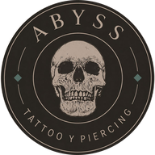

Esta página no existe
Te llevamos a la portada del estudio en unos segundos…
Ir a la portada TATTOO & PIERCING DESDE 2009 · SAN BERNARDO, SANTIAGO
Te llevamos a la portada del estudio en unos segundos…
Ir a la portada TATTOO & PIERCING DESDE 2009 · SAN BERNARDO, SANTIAGO